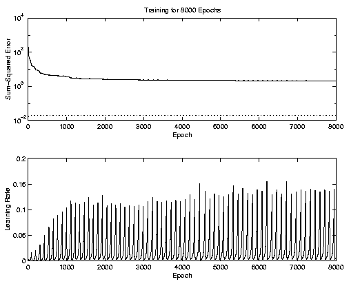

Should you ever get a mental lasp and decide that you can take four 5xxx Csci and a part time job, you will find that watching computers compute things like the following completely fascinating.
This was supposed to converge if you did the ( .9 .* Out2) thing, it didn't for me. :)
ok, can you tell I'm getting burned out?
>> TP(1) = 1000; TP(2)=8000; >> [nw1,nb1,nw2,nb2,te,tr] = trainbpx(W1,B1,'tansig',W2,B2,'tansig',In2,( .9 .* Out2),TP); TRAINBPX: 0/8000 epochs, lr = 0.01, SSE = 194.582. TRAINBPX: 1000/8000 epochs, lr = 0.0938492, SSE = 3.6085. TRAINBPX: 2000/8000 epochs, lr = 0.011494, SSE = 2.60787. TRAINBPX: 3000/8000 epochs, lr = 0.0125636, SSE = 2.4123. TRAINBPX: 4000/8000 epochs, lr = 0.00500449, SSE = 2.26408. TRAINBPX: 5000/8000 epochs, lr = 0.00455369, SSE = 2.2042. TRAINBPX: 6000/8000 epochs, lr = 0.00631009, SSE = 2.15314. TRAINBPX: 7000/8000 epochs, lr = 0.00456741, SSE = 2.11743. TRAINBPX: 8000/8000 epochs, lr = 0.00632909, SSE = 2.07979. TRAINBPX: Network error did not reach the error goal. Further training may be necessary, or try different initial weights and biases and/or more hidden neurons.
